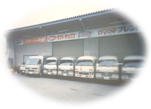
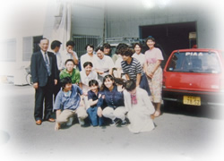

会社案内
会社概要
| 商号 | 株式会社 安東商会 |
|---|---|
| 所在地 | 〒870-0943 大分県大分市片島５００番地 TEL：097-568-2010／FAX：097-569-7698 |
| 代表者 | 安東 法夫 |
| 設立 | 昭和25(1950)年 1月23日 |
| 営業時間 | 8:00 ～ 17:00 |
| 休日 | 土曜日・日曜日・祝祭日 |
| 資本金 | 10百万円 |
| 従業員数 | 21名（パート・アルバイト含む） |
| 事業内容 |
◆自動販売機オペレートサービス（ダイドードリンコ共栄会） ◆訪問治療（はり・きゅう・マッサージ・リハビリ） からだ元気治療院 大分 |
アクセスマップ
沿革
-
昭和25年（1950年）菓子卸として、安東五作が創業

-
昭和45年（1970年）スーパーマーケット事業の展開を始める
-
昭和56年（1981年）缶飲料自動販売機事業の展開を始める

昭和58年（1983年）スーパーマーケット事業の閉鎖
昭和61年（1986年）菓子卸の閉鎖 事業所を現在の片島に移転
平成３年（1991年）“安東宏”が代表取締役に就任
-
平成４年（1992年）明治乳製品宅配事業の展開を始める

平成13年（2001年）楽天市場に出店。通信販売事業の展開を始める
平成14年（2002年）株式会社へ組織変更
平成19年（2007年）“安東法夫”が代表取締役に就任
平成22年（2010年）クリクラ宅配事業の展開を始める